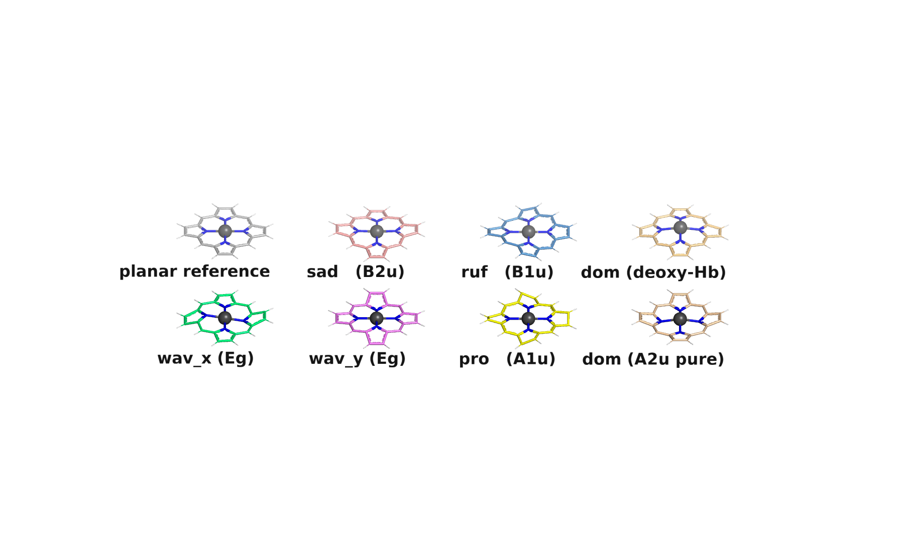
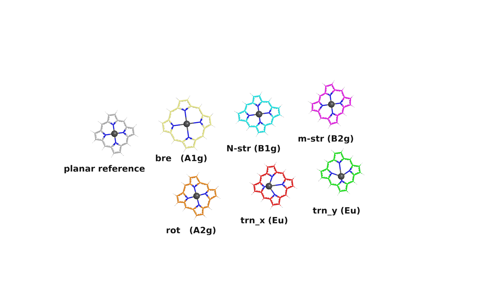
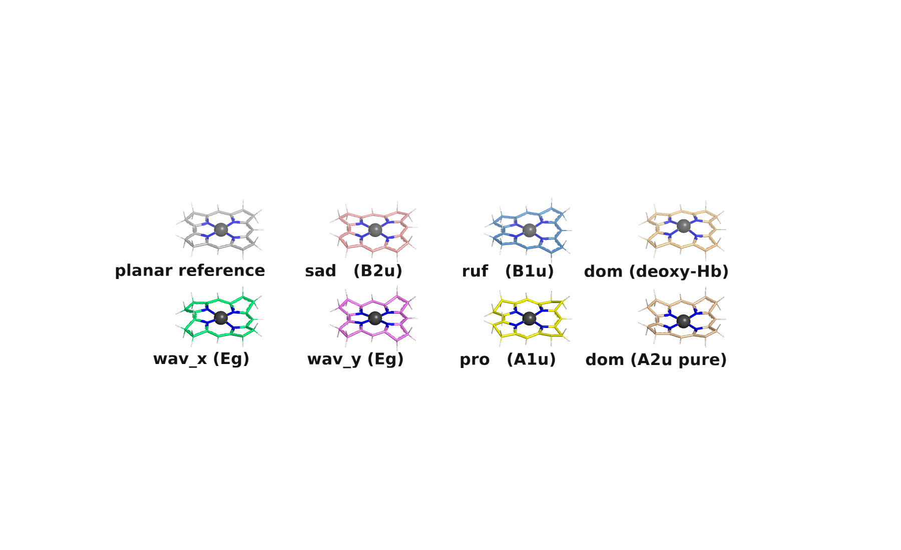
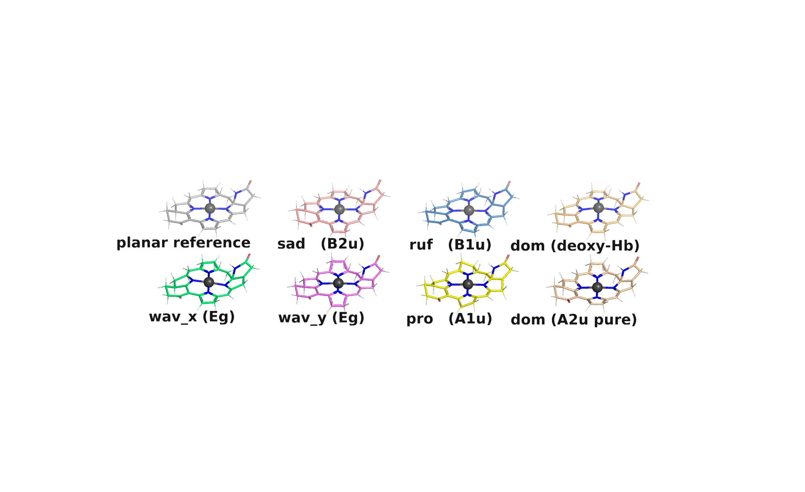

Sofia
An NSD lesson — what Sofia decomposes, and why it matters
Open any crystal structure of a metalloporphyrin, and you'll see the same thing: the macrocyclic ring is never quite flat. It saddles, it ruffles, it domes. The metal sits a hair above the mean plane. Two opposite pyrroles squeeze closer together than the other two. These distortions look chaotic if you stare at one structure, but they are not random — they are the fingerprints of how the metal, the spin state, the axial ligands, and the protein matrix all push and pull on a delicate, conjugated π system.
Normal-coordinate Structural Decomposition (NSD), formalised by Jentzen, Song and Shelnutt in 1997, is the trick for reading those fingerprints. Project the observed distortion onto the lowest-frequency normal modes of the idealised D4h macrocycle, and you get a small set of signed numbers — sad, ruf, dom, wave, propeller — that tell you which distortions matter and by how much.
Sofia is the open implementation of NSD that we use for our metallo-porphyrin, metallo-corrin, and F430 work. It reads Gaussian opt logs and ORCA QM/MM output, walks the graph to find the inner ring (no user-supplied atom indices), fits the mean plane, projects the displacements onto an analytic D4h-pattern minimal basis, and spits out per-file reports, CSV summaries, and PyMOL visualizations of what each mode actually looks like.
This page is a working tutorial. Read top to bottom and you should come away knowing what Sofia does, what its outputs mean, and how to use it on your own data.
1. What is NSD?
Take a metalloporphyrin. Forget the metal for a moment, forget the axial ligands, and imagine the bare 24-atom inner ring (4 pyrrole nitrogens, 8 α-carbons bonded to them, 4 meso carbons bridging the pyrroles, 8 β-carbons making up the pyrrole backs). In its idealised geometry, this ring has D4h symmetry — a four-fold rotation axis through the metal, two mirror planes (one through opposite N's, one through opposite meso C's), a horizontal mirror plane.
Group theory tells you the normal vibrational modes of any D4h system fall into a fixed set of irreducible representations (irreps): A1g, A2g, B1g, B2g, Eg, A1u, A2u, B1u, B2u, Eu. Each irrep corresponds to a specific symmetry behaviour. A2u, for example, changes sign under the horizontal mirror — atoms above the plane move up, atoms below move down, but the four-fold axis is preserved. That's doming.
Jentzen, Song and Shelnutt's insight was that you don't need every normal mode to describe the distortion of a real porphyrin — just the lowest-frequency one in each symmetry channel. Six modes cover out-of-plane distortion (one each from A2u, B1u, B2u, A1u, plus the two-component Eg pair); six more cover in-plane distortion. Project the observed Δzi and (Δxi, Δyi) of the 24 inner-ring atoms onto these twelve modes, and you've reduced a 72-component displacement vector to a fingerprint of twelve signed amplitudes.
An analogy: NSD is to geometry as SALC analysis is to electron density
If you've done LCAO molecular-orbital theory, the structure of NSD will feel familiar. There you write a molecular orbital as a weighted sum of symmetry-adapted linear combinations of atomic orbitals (SALCs): ψMO = ΣΓ cΓ · SALCΓ, and the signed coefficients cΓ tell you how much each irrep contributes to the orbital. NSD does the same thing for geometry: write the observed distortion as Δr = ΣΓ dΓ · BΓ, where the BΓ are symmetry-adapted distortion templates and the signed amplitudes dΓ tell you how much each irrep contributes to the shape. The mathematical machinery is identical — orthogonal projection onto a symmetry-classified basis — only the object being decomposed is different (an electronic wavefunction in MO theory, a 72-component displacement vector here).
The pedagogical pay-off is the same in both cases: a high-dimensional object reduces to a small set of symmetry-channel weights you can compare across systems. "This porphyrin is 60 % saddled, 30 % ruffled" is the same kind of statement as "this MO is 70 % N 2pz SALC, 20 % Cα pz SALC".
Two places where the analogy doesn't quite map:
-
MOs are eigenvectors of the Fock / Kohn-Sham operator —
they're physically distinguished by the underlying quantum mechanics.
Sofia's minimal-basis modes are analytic templates (lowest-order
polynomial generators of each irrep), chosen for interpretability.
The closer eigenvalue analogue is the molecular Hessian and its
normal modes; that is what Sofia's
corrin-freqmodule (Variant iii) uses when you want a basis-rigorous decomposition for a non-D4h macrocycle. - LCAO reconstruction is exact within its basis (a complete change of basis); NSD's minimal basis is intentionally truncated to one representative per irrep, so a residual is built in by design. The fraction-explained number Sofia reports tells you how much of the distortion the minimal basis captures — analogous, in spirit, to a "basis completeness" check.
2. The macrocycles Sofia handles
Sofia covers four macrocycle classes, distinguished by their inner-ring topology:
| Class | Inner ring | Symmetry | Examples |
|---|---|---|---|
| Porphyrin | 24 atoms (4 N + 8 Cα + 4 Cmeso + 8 Cβ) | D4h idealised | metalloporphine, tetrahydroporphyrin, 1HBM-style amide-substituted probes |
| Corphin / F430 | 24 atoms (same topology as porphyrin) | not D4h — saturation of pyrroles + fused F-ring break it | F430 cofactor of methyl-coenzyme M reductase |
| Corrin | 23 atoms (4 N + 8 Cα + 3 Cmeso + 8 Cβ) | C1 — only 3 mesos; one Cα–Cα direct bond closes the ring | vitamin B12 / cobalamin, di-OH metallocorrins |
| F430 in QM/MM | same 24-atom corphin ring, embedded in MCR enzyme | same as corphin | F430 in the active site of methyl-coenzyme M reductase |
Why does Sofia identify the inner ring by graph topology rather than from user-supplied indices? Because in real datasets — full cobalamin with axial dimethylbenzimidazole, F430 with all the propionamide tails, arbitrary substitution patterns from a manuscript — the inner ring is embedded in a much larger molecule, and its atom ordering varies file by file. The graph walk (find the metal, find the four pyrrole N's bonded to it via the 5-ring N–Cα–Cβ–Cβ–Cα–N closure, find the Cmeso bridges) is robust to all of that.
For corrin specifically, the closure is different: instead of four Cmeso bridges between the pyrroles, there are only three — and one direct Cα–Cα bond (the "direct link"). Sofia finds this bond explicitly and uses it to identify the corrin ring, distinguishing it from porphyrin.
3. The minimal basis — what each mode looks like
Twelve signed amplitudes is a compact summary, but most people don't have an intuitive picture of what a B1u displacement looks like. Sofia ships a generator that builds a visualization bundle for each macrocycle: a planar reference plus one distorted variant per mode, rendered side by side.
Out-of-plane modes (Δz)
Six basis modes cover the OOP distortion. The first four are non-degenerate (single-component) irreps; the fifth is the two-component Eg pair (we render wav_x and wav_y separately).
| Mode | Irrep | Pattern | Geometric meaning |
|---|---|---|---|
| sad | B2u | Δz ∝ x²−y² | saddled — pyrroles tilt alternately up/down |
| ruf | B1u | Δz ∝ x·y | ruffled — meso C atoms alternate up/down |
| dom | A2u | Δz ∝ r² | uniform doming / cup-shape |
| wav_x | Eg | Δz ∝ x·r² | waved along x |
| wav_y | Eg | Δz ∝ y·r² | waved along y |
| pro | A1u | Δz ∝ x·y·(x²−y²) | propellered — each pyrrole twists about its own axis |

In-plane modes (Δx, Δy)
Six basis modes cover the IP distortion. Again, four are non-degenerate and there's one Eu pair (translation x / y).
| Mode | Irrep | Pattern | Geometric meaning |
|---|---|---|---|
| bre | A1g | uniform Δr outward | breathing — uniform radial expansion |
| N-str | B1g | Δr ∝ cos(2θ) | opposite-N pairs ↔ trans-N–N stretch |
| m-str | B2g | Δr ∝ sin(2θ) | opposite-meso pairs ↔ trans-meso stretch |
| rot | A2g | Δθ ∝ cos(4θ) tangential | in-phase rotation of the four pyrroles |
| trn_x | Eu | Δx ∝ r² | macrocycle translation in x vs metal |
| trn_y | Eu | Δy ∝ r² | same in y |

Same modes on a different macrocycle
The minimal basis is constructed analytically from polynomial generators of the (x, y) coordinates, so it adapts to any inner-ring atom count. Apply Sofia's basis to corrin's 23-atom ring and you get 23-dimensional Δz vectors per mode; apply it to corphin's 24-atom ring with F430's peripheral shell and the substituents come along for the ride.


4. Inside Sofia: the analysis pipeline
Given a Gaussian opt log, Sofia does six things in order:
-
Parse the last
Standard orientation:block. Read the converged geometry (atomic numbers + Cartesian coordinates). Anything other than the final geometry is ignored — Sofia is a structural analyser, not a thermodynamic one. - Build the heavy-atom adjacency graph. Pairwise distances; covalent thresholds parameterised per element (C–C 1.75 Å, C–N 1.65 Å, M–N 2.6 Å, etc.). The graph walks identify atoms by topology, not by atom indices.
- Find the metal, then the inner ring. One transition metal is required (Z ∈ {V, Cr, Mn, Fe, Co, Ni, Cu, Zn, Rh}). For porphyrin / corphin: walk to the four pyrrole N's bonded to the metal via the 5-ring N–Cα–Cβ–Cβ–Cα–N closure, then identify Cα and Cmeso by their connectivity. For corrin: same, plus locate the unique Cα–Cα direct bond that closes the ring instead of a fourth meso.
- Fit the macrocyclic mean plane. SVD on the inner-ring coordinates, then rotate the whole molecule so the plane normal aligns with +z. The macrocycle now sits roughly in the xy plane.
- Canonicalise xy. Rotate in-plane so the four N atoms lie on the ±x and ±y axes. This fixes a global orientation: every structure Sofia processes ends up in the same canonical frame, so the signed amplitudes are directly comparable across files.
- Project displacements onto the basis. For OOP, build the analytic D4h-pattern Δz vectors and project the observed Δz onto them. For IP, do the same with the analytic (Δx, Δy) basis. Output the signed amplitudes plus the residual.
The whole pipeline is deterministic — same input, same output. There are no fitted parameters, no random initialisation. The only choices Sofia makes are the covalent-radii thresholds for the adjacency graph and the convention for the canonical orientation, both fixed by the Jentzen-Song-Shelnutt 1997 reference.
5. Using Sofia
Sofia has a master CLI (sofia.py) that dispatches to per-class
analysis modules. For a single file:
python3 sofia.py porphyrin examples/porphyrin/Co1_Pro.log
python3 sofia.py corrin examples/corrin/CoI_Corrin_S1.log
python3 sofia.py corphin examples/corphin/F430_Ni2.log
For a whole directory (Sofia finds .log files recursively, one row per file
in the CSV):
python3 sofia.py porphyrin examples/porphyrin/ --csv out.csv --plot plots/
Don't know which macrocycle class your file is? Use auto-detect — Sofia walks the graph and dispatches:
python3 sofia.py auto examples/corrin/CoI_Corrin_S1.log
# → identifies as corrin, runs the corrin pipeline
Or just run python3 sofia.py with no arguments — that opens
an interactive prompt that walks you through macrocycle choice, mode
glossary, input path (with tab completion), CSV / plot options, and so
on. Recommended for first-time users.
The interactive prompt also offers to generate the visualization
bundle — at the start of the flow, Sofia asks whether you want
to render the minimal-basis modes for porphyrin, corrin, or corphin,
prompts for amplitude and output directory, and (if PyMOL is on PATH)
optionally renders PNG previews via headless PyMOL. So you don't need
to remember the viz subcommand or its flags — you can
drive the whole thing from a single python3 sofia.py call.
Sofia in an iterative workflow
Sofia is built to be used iteratively, not as a one-shot batch tool. A typical session looks like this: optimise a structure in Gaussian, run Sofia to read off the distortion, look at the conformer label, generate the viz bundle to see what the dominant mode looks like, then go back to the input — change the metal, change the spin state, change the axial ligand — re-optimise, re-run Sofia, compare. The interactive prompt is designed for that loop: tab-complete to the new log, accept the defaults you used last time, see the numbers shift.
When you're working a directory of related structures (a metal series,
a spin-state series, a series of cofactor probes), point Sofia at the
directory once with --csv and --plot and you
get the cross-dataset summary in one go. Re-running after adding new
files is just re-running the same command — Sofia is stateless, so
iterative refinement does not pile up cruft.
The viz subcommand
# Build the porphyrin minimal-basis bundle (default)
python3 sofia.py viz --amp 1.0
# Corrin or corphin viz
python3 sofia.py viz --type corrin --amp 1.0
python3 sofia.py viz --type corphin --amp 0.7
# With headless PyMOL PNG previews
python3 sofia.py viz --amp 1.0 --render
6. Reading the output
The per-file report
For each input file, Sofia prints a structured report: header, mode glossary, key findings (max |Δz|, |Dop|, |Dip|, metal-to-plane distance, mean M–N distance), then the OOP and IP amplitude tables, per-irrep magnitudes, class-mean radii, and a per-atom displacement table.
The conformer-label fingerprint is the headline
summary: a string like saddled + ruffled or
propellered. Modes are listed by amplitude, largest first,
joined by +. Any mode whose amplitude is ≥ 30 % of the
dominant is also included; if the dominant is below 0.05 Å (X-ray
uncertainty) the label is essentially planar (OOP) or
essentially symmetric (IP).
The CSV summary
When you pass --csv FILE, Sofia writes one row per input.
The columns:
| Column | Meaning |
|---|---|
file | log file stem |
metal | element symbol of the macrocycle metal |
conformation_oop / conformation_ip | conformer-label fingerprint |
max_abs_dz_A | maximum absolute z-displacement of any inner-ring atom (Å) |
D_oop_obs_A, D_ip_obs_A | total observed OOP / IP distortion magnitude |
D_oop_minbasis_A, D_ip_minbasis_A | reconstruction from the minimal basis |
frac_explained_oop, frac_explained_ip | fraction of total distortion captured by the basis |
d_<mode>_A | signed amplitude (Å) of each minimal-basis mode |
Mag_<irrep>_A | per-irrep magnitude |DΓ|, basis-independent within the irrep |
M_to_plane_A | signed metal-to-mean-plane distance |
M_N_mean_A | mean metal–N distance |
r_<class>_A | mean centroid-to-class distance for N / Cα / Cmeso / Cβ |
Corrin adds axial-ligand columns (n_axial,
axial_above_atom, etc.). QM/MM adds spin / multiplicity
metadata. The CSV is the primary input for downstream cross-dataset
plots and statistical analysis — paste it into pandas, ggplot,
whatever.
The plots
With --plot DIR, Sofia writes per-file figures
(<stem>_OOP.png showing Δz profile + minimal-basis
reconstruction, <stem>_IP.png for the in-plane
channel) and cross-dataset summaries
(_summary_OOP.png / _summary_IP.png: a grid
of bar charts, one panel per mode, bars across files in the directory).
7. The PyMOL visualization bundle
The viz subcommand generates a directory like
viz/porphyrin/ containing:
porphyrin_planar.pdb— flat reference geometry.porphyrin_sad.pdb,porphyrin_ruf.pdb, … — one PDB per OOP and IP minimal-basis mode, each showing the planar reference with that mode's Δz (or Δx, Δy) pattern applied at the requested amplitude.porphyrin_oop_modes.pml,porphyrin_ip_modes.pml— PyMOL scripts that load the bundle into a side-by-side grid, set colours, labels, camera tilt, and rendering options.
The PDB files use explicit CONECT records so PyMOL keeps
the macrocyclic skeleton drawn at any amplitude — including corrin's
Cα–Cα direct link and corphin's F-ring lactam, which would otherwise
drop out at large distortions when bond-length-based bonding fails.
To render PNG previews headlessly:
pymol -cq viz/porphyrin/porphyrin_oop_modes.pml \
-d 'ray 1800, 1100; png oop.png; quit'
Or pass --render to sofia.py viz and Sofia
does this for both grids automatically (as long as PyMOL is on PATH).
8. Caveats and limitations
D4h symmetry is an idealisation. Real macrocycles in real molecules are rarely purely D4h — peripheral substituents break the symmetry, the metal can break it, axial ligands can break it. Sofia uses the analytic D4h basis as a fixed coordinate system to project distortions onto, not as a claim that the molecule is D4h. The signed amplitudes are well-defined geometric projections regardless of the molecule's true symmetry.
For corrin, the D4h labels are nominal. Corrin is C1 — only three mesos, one direct Cα–Cα link. Sofia's analytic basis still produces well-defined polynomial Δz = f(x, y) on the 23 inner-ring atoms, so the modes are valid as geometric descriptors. The names sad, ruf, dom carry their porphyrin meaning by analogy. The per-irrep magnitudes are not rigorously basis-independent in the way they are for porphyrin (corrin doesn't have those irreps).
For corphin / F430, same warning. The saturation
pattern (sp³ pyrrole carbons + fused F-ring) breaks four-fold symmetry.
Sofia's analysis is robust geometrically (mean plane, |Doop|,
|Dip|, M-plane, M–N, class radii are all rigorous), but
the irrep labels are approximate classifications. For a basis-rigorous
corphin analysis use Sofia's corrin-freq module with a
Gaussian-derived normal-mode basis (Variant iii in the manuscript).
Sofia is geometry-only. It does not read SCF energies, molecular orbitals, populations, or frequencies. It needs only the final optimised geometry. The flip side is that it works on any tetrapyrrole log, regardless of the underlying level of theory — Sofia's output describes the structure, not the electronics.
The minimal basis is, by design, incomplete. Sofia
reports frac_explained_oop and frac_explained_ip
— the fraction of the observed distortion that the minimal basis
captures. Typical values are 70–95 %; the rest is higher-mode contributions
(mostly higher-frequency normal modes within the same irrep, plus
numerical residual). If frac_explained falls below ~50 %,
something unusual is happening — peripheral-substituent strain, a
non-tetrapyrrole component intruding on the mean plane, an exotic
conformer the minimal basis doesn't reach. Investigate before publishing.
9. Further reading
- The Manual. Manual.md in the repo — full theory, basis construction details, per-script implementation notes, the analytic polynomials, the canonical-frame convention.
- The original NSD paper. Jentzen, W.; Song, X.-Z.; Shelnutt, J. A. Structural Characterization of Synthetic and Protein-Bound Porphyrins in Terms of the Lowest-Frequency Normal Coordinates of the Macrocycle. J. Phys. Chem. B 1997, 101, 1684–1699.
-
Examples in the repo.
examples/porphyrin/,examples/corrin/,examples/corphin/— three stripped Gaussian logs per macrocycle class, each runs end to end with Sofia. Diff your output against the expected results for a quick install check. - The README quick-reference. README.md for the CLI cheat-sheet, install instructions, and a worked example without the theory background.